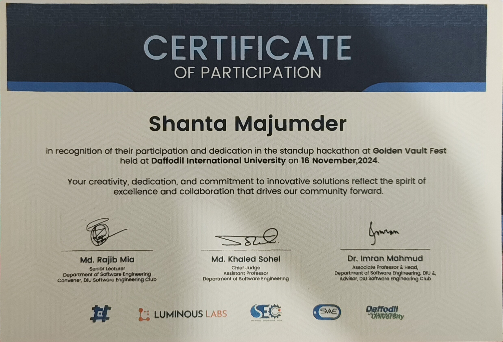

18 December 2025 · Google x Kaggle
5-Day AI Agents Intensive Course with Google
Studied AI agent architectures, tool use, planning, reasoning, and real-world agent applications.
View ProofIntensive AI Agent courses, ECMWF Earth systems modelling programs, software testing workshops, and national competitions.
Hands-on cohorts, technical workshops, and academic competitions with present proof documents.
Studied AI agent architectures, tool use, planning, reasoning, and real-world agent applications.
View Proof
Applied prompt engineering and AI-assisted workflows to build and deploy applications.
View Proof
Hands-on Workshop on Software Testing by Industry Experts. Learned industry-standard software testing practices, tools, and quality assurance methodologies.
View Proof
AI Project Competition – 4th National Data Science Summit. Presented an ensemble machine learning architecture integrated with a Streamlit deployment.
View Proof
Collaborated with a multidisciplinary team during the Standup Hackathon to ideate and pitch data-informed solutions under rapid timelines.
View ProofOrganised by the European Centre for Medium-Range Weather Forecasts (ECMWF), covering AI weather modelling, Destination Earth, and responsible AI in Earth system modelling.
CompletedAdvanced modules on data-driven Earth system forecasting, hybrid physical-ML modelling, and Earth observation datasets.
CompletedContinuing advanced training in large-scale Earth system modelling, uncertainty quantification, and operational AI forecasting.
Currently On going